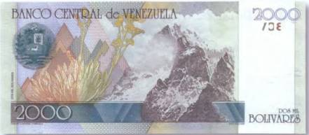
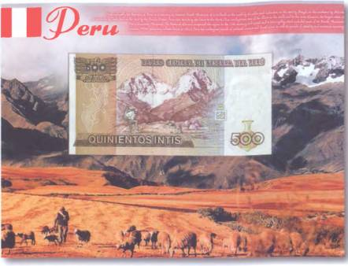

Тайны бумажных денег : Отклики Всемирного потопа

К востоку от Лимы, в Андах, простирается провинция Уарочири. Испокон веков среди местных индейцев бытуют легенды о том, как однажды весь поднебесный мир чуть было не погиб. А предсказало ужасную катастрофу животное, известное под именем лама. Вот как это случилось…
Как-то раз один индеец выгнал свою ламу на хорошее горное пастбище и хотел ее стреножить. Однако животное вдруг стало жалобно завывать и упираться. А в ее глазах индеец увидел глубокую скорбь. Хозяин ламы был несказанно удивлен и в сердцах воскликнул:
— Что ты воешь, глупая?
И тут индейцу пришлось удивляться по-настоящему. Ибо животное вдруг заговорило человеческим языком:
— Печалюсь я по той причине, что жить нам с тобой осталось всего пять дней. Потому как на шестой день море поднимется и поглотит всю землю. И все живое погибнет.
Еле справившись с собой от ужаса, человек спросил, нет ли какого-нибудь средства избежать приближающейся гибели. В ответ на это лама велела ему взять с собой запас пищи на пять дней и следовать за ней на вершину высокой горы. Индеец послушался и пустился в путь с мешком припасов за спиной. Достигнув вершины горы, он увидел там великое множество самых разных птиц и животных. И в тот же миг на глазах у изумленного индейца море стало быстро подниматься. Водой сначала затопило плодородные долины, потом высокогорные пастбища, а затем и всю землю. И только на сaмой вершине горы остался незатопленным небольшой участок суши. На нем и сгрудились спасшиеся от наводнения земные твари, да индеец со своей так кстати заговорившей ламой. От этого единственного уцелевшего человека и произошли все последующие поколения людей. Во всяком случае, так утверждает перуанская легенда.

Изображения остроконечных пиков украсили и денежные знаки Венесуэлы. Например, на банкноте страны в 2000 боливаров 1998 г. запечатлена гора Боливар, названная так в честь национального героя Южной Америки — Симона Боливара (рис. 118).
В сказаниях о Всемирном потопе высочайшие вершины мира часто выступают в роли спасительной тверди для прародителей человечества. А вот в наше время с горами связано множество историй с куда более печальным исходом. Время от времени под срывающимися с гор снежными лавинами гибнут люди. Сильные перепады температур, разряженный на больших высотах воздух, глубокие пропасти и частые камнепады — это, пожалуй, самые известные из тех опасностей, которые подстерегают бесстрашных покорителей вершин. Поэтому, находясь в горах, необходимо быть предельно внимательными и осторожными.

Изображение группы альпинистов и их базового лагеря имеется на перуанской денежной единице в 500 инти 1987 г. (рис. 119).
Люди запечатлены в момент их восхождения к живописным вершинам Анд. Особенно эффектно эта банкнота смотрится в представленном здесь подарочном варианте.